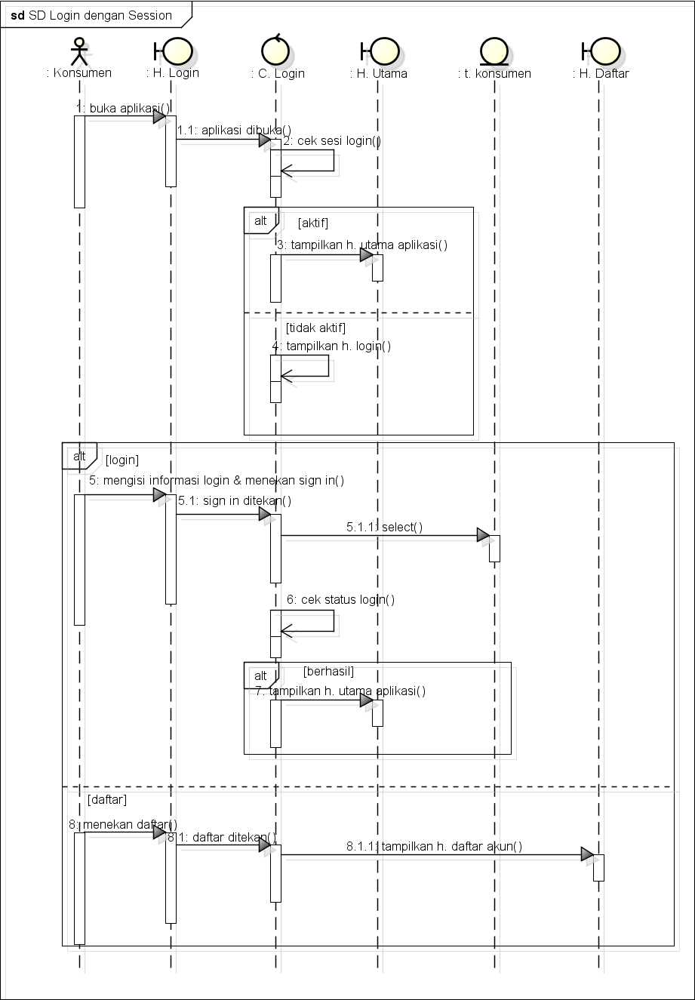
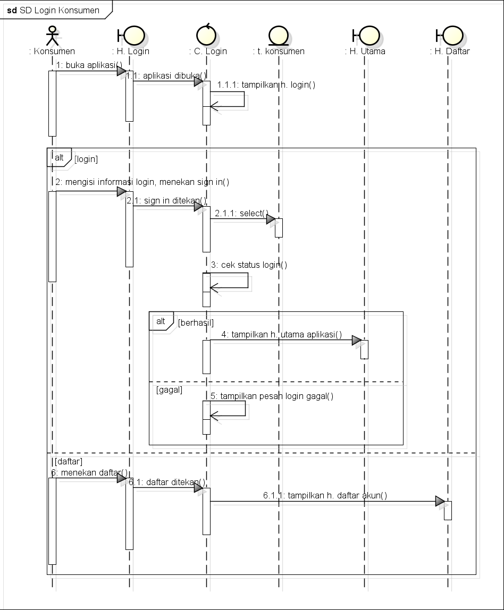

Saduran saya hari ini:
- Pertemuan 7 merupakan hari terakhir mengumpulkan saduran dan kehadiran github supaya lebih fokus untuk presentasi
- Membahas maksud dari masing-masing soal UTS
- tinyint adalah tipe data di mysql untuk bilangan bulat yang nilainya paling kecil (max 127) yang cocok untuk digunakan pada statuspsn di studi kasus kita
- Sequence diagram itu untuk menggambarkan urutan proses yang terjadi pada sebuah halaman/form di aplikasi/sistem
- Pada android contoh form itu yaitu saat login, registrasi. Di web juga ada, yaitu page login. Intinya, yang mempunyai input, disebut form
- Yang ada di halaman atau form, dijabarkan urutan prosesnya di sequence diagram
- Bahan sequence diagram, yaitu deskripsi usecase + rancangan layar + class diagram
- Elemen inti pada Sequence Diagram:
- Actor = pengguna aplikasi/sistem
- Boundary = form/halaman di aplikasi
- Control = code program
- Entity = tabel
- Message = ativitas di aplikasi/sistem
- Aktor berinteraksi dengan boundary (yang ada halaman atau yang kita lihat sebagai pengguna) membuka aplikasi. Kemudian boundary berinteraksi dengan control memberikan instruksi bahwa aplikasi tersebut dibuka. Maka control akan menampilkan halaman yang dituju.
- Dalam sequence diagram bisa terdapat method, misalnya saat user login, maka C. Login akan select() data dari Entity Konsumen
- Membuat SD Login Konsumen berdasarkan deskripsi usecase + rancangan layar + class diagram Login
Untuk file .astah yang berisi UML yang telah dibuat, disini

